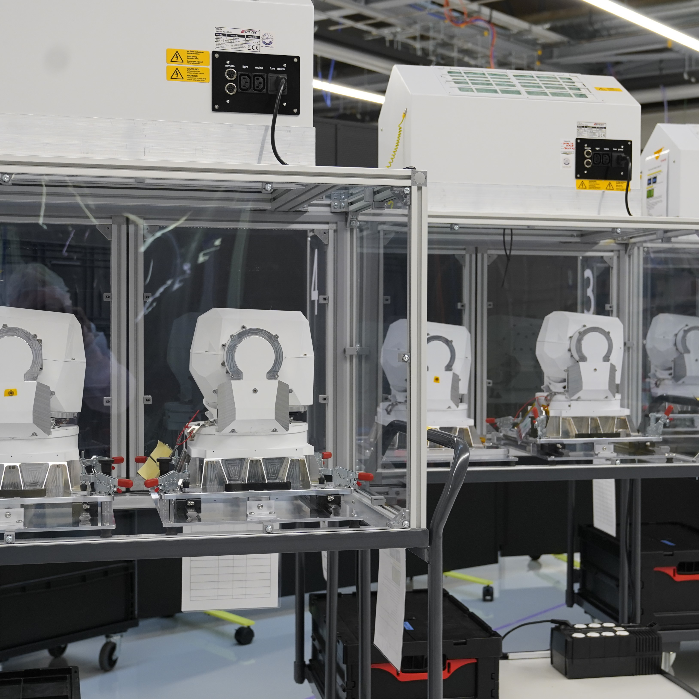
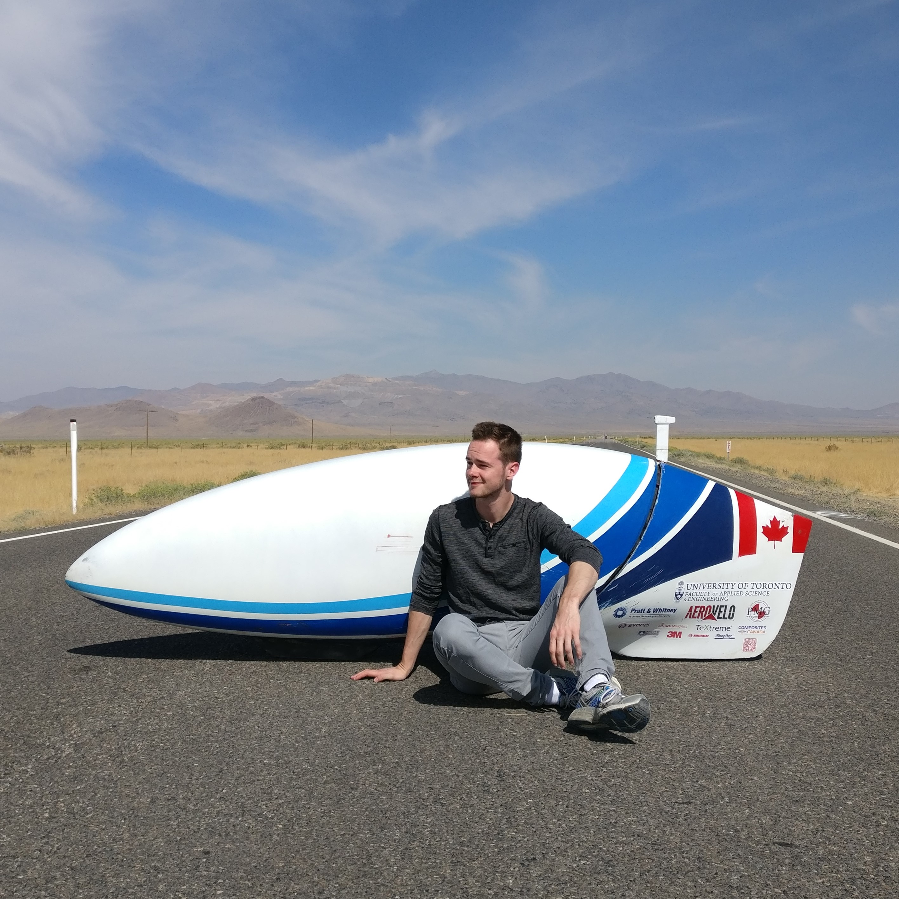
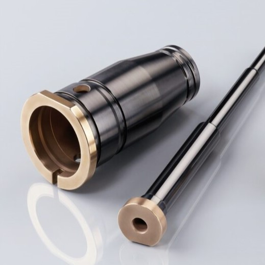

Projects
Space and Satellites

Free Space Optical Laser Communications
- Developed a telescope for a spaceborne NIR optical communications terminal
- Coordinated the mechanical design, simulation, testing, and manufacturing
- Oversaw the subsystem from initial design to serial production
GNSS Radio Occultation
- Master's thesis simulating GNSS occultation using raytracing
- Implemented atmospheric and ionospheric models in C++ for real-time simulation
DEDRA CubeSat
- Communications and data handling design of a debris analysis CubeSat
- Attended the ESA CubeSat concurrent engineering workshop
High Performance Vehicles

U of T Human Powered Vehicle Design Team
- Project Director for the Tempest utility speedbike project
- Managed a team of 30 university students
- Optimized monocoque carbon fiber vehicle structures
Aerovelo
- Team member for the Atlas human powered helicopter project
- Won the $250 000 USD American Helicopter Society Igor I. Sikorsky Prize
TUfast Eco Team
- Designed and built high performance carbon fiber rims for an urban concept car
- Ply optimization using Altair HyperMesh software
Failure Analysis

Husky Injection Molding Systems Ltd.
- Applied a multitude of non-destructive and destructive analysis methods
- Prepared samples and produced high quality microscopic and topographic images
- Determined the cause of failure in various machine components
Diamond-like Carbon Coatings
- Undergraduate thesis testing DLC coatings using novel techniques
- Determined a time efficient method for measuring coating wear resistance